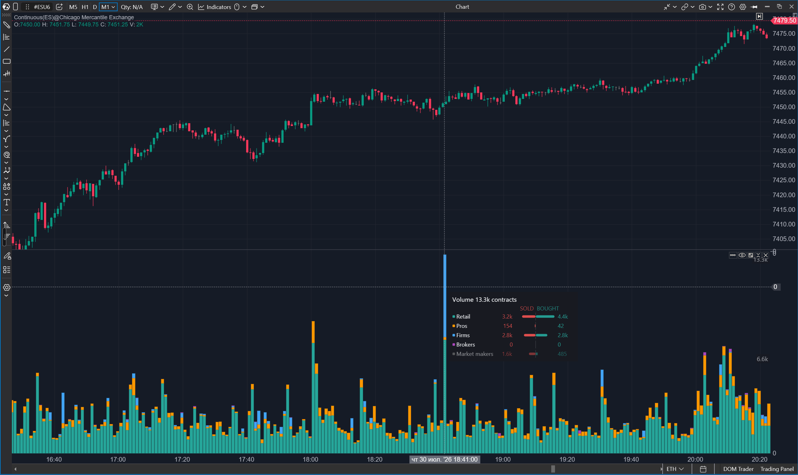
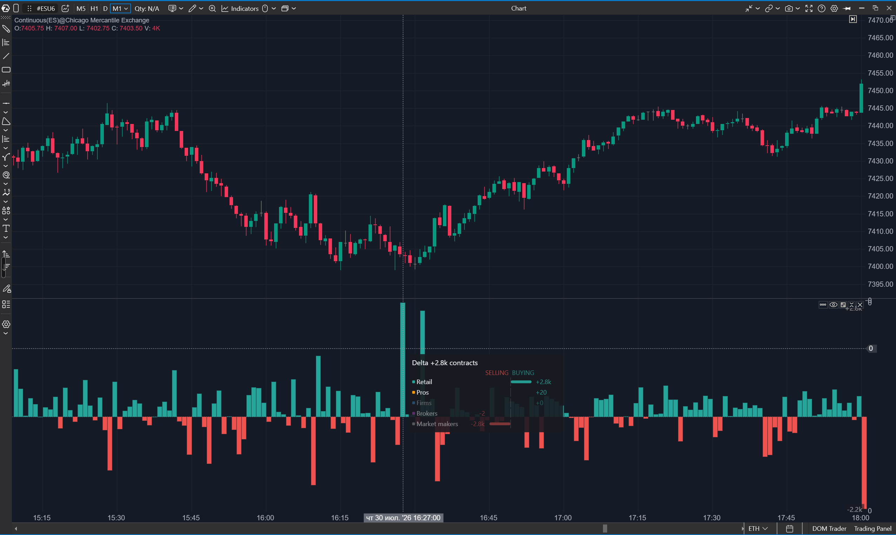
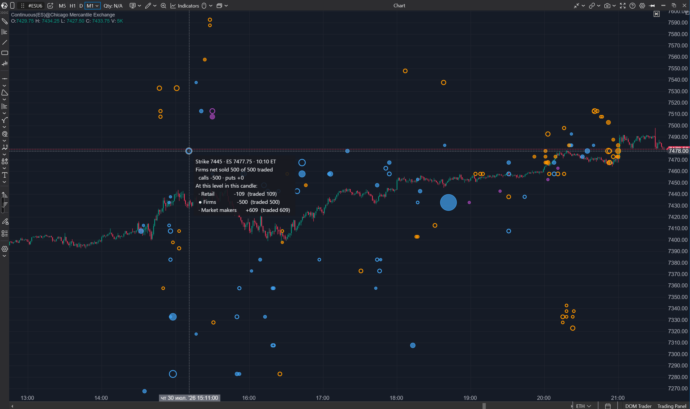

10. Indicadores de flujo: quién mueve el riesgo y cómo
¿Qué es lo primero que mira un trader en cualquier mercado? El volumen: cuánto se
negocia. Lo segundo es la delta: quién presiona — compradores o vendedores.
Nuestros usuarios lo hacen cada día con el futuro ES. Ahora hay una mirada
parecida para el mercado de opciones que mueve esos futuros — y no sin rostro,
sino con los nombres de las cohortes de la lección anterior.
Antes de abrir los indicadores, eso sí, tenemos que acordar dos cosas que los
distinguen de la cinta habitual. Ambas son simples, y toda la lectura descansa en
ellas.
La unidad en que contamos: exposición delta
El feed no nos revela recuentos de contratos — y francamente, los recuentos
tampoco servirían: cien contratos de un ala lejana y cien contratos en el dinero
son cosas incomparables. En su lugar, todo en los indicadores de flujo se mide en
exposición delta en equivalente ES: cuánto riesgo direccional, expresado en
contratos de futuros, hay detrás de una posición en opciones.
La regla de conversión es una sola y viene horneada en los datos: una delta de una
opción SPX controla cien «acciones» del índice, y un ES paga 50 dólares por
punto — así que una delta = dos contratos ES. Cuando un indicador dice
«Retail added 115 ES», significa: la suma de las operaciones del retail en este
strike alargó su posición en el equivalente de 115 futuros. No «compraron 115
futuros» — sino «ahora cargan ese riesgo direccional de más».
Por qué este número importa más que los recuentos: toda operación de cliente tiene
a un MM como contraparte, y el MM no sostiene riesgo direccional — lo cubre, con
futuros reales. «Retail added 115 ES» se lee casi literalmente como «el MM tendrá
que COMPRAR ~115 ES»: el MM que vendió ese riesgo carga el espejo de −115 y lo
nivela comprando futuros — el clásico «vendí calls, compro el subyacente». Las
burbujas y barras de estos indicadores son los heraldos del flujo real en el libro
de órdenes.
Dos números en vez de uno: net y repositioned
El segundo acuerdo es sobre el tiempo. Los datos llegan como fotos por minuto de
las posiciones; el cambio en un minuto es la «operación» elemental de estos
indicadores, como un tick en la cinta. Una vela de tu timeframe suma los cambios
por minuto — y sumar se puede de dos maneras:
- con signos — obtienes net: dónde acabó la vela, el desplazamiento final
de la posición;
- por valor absoluto — obtienes repositioned: cuánto riesgo se empujó por
el strike en total, contando movimientos en ambas direcciones.
Es exactamente el par que forman el volumen y la delta en una vela corriente:
volumen ≥ |delta|, y el volumen no se recupera de la apertura y el cierre — es una
propiedad del camino, no de los extremos. Un ejemplo vivo de nuestras pruebas: una
vela con patas «calls +13, puts +28» — la suma de valores absolutos es 41 — y
repositioned 151. Dentro de la vela se empujaron ~67 ES de ida y vuelta por
los calls y ~84 por los puts, y como resultado solo quedó calderilla. Tres cuartas
partes del trabajo colapsaron a cero — y solo repositioned lo vio.
Lo que se lee es su proporción: net ≈ repositioned — flujo unilateral,
convencido; net ≪ repositioned — una gran reorganización de doble vía sin
dirección elegida: el nivel está «caliente», pero la batalla no está decidida.
Y una advertencia honesta, compartida por los tres indicadores: repositioned es
una cota inferior de la actividad. Una posición abierta y cerrada dentro de un
solo minuto es invisible incluso para él.
Options X-Ray: Flow: cuánto y quién
La primera pregunta, la más simple: ¿cuánta exposición delta se movió durante esta
vela — y con las manos de quién?
El indicador dibuja en un panel aparte una barra por cada vela: la altura es el
repositioned total en su lapso; los segmentos de color, la contribución de cada
cohorte. Turquesa es el retail, naranja los pros, azul las firms, violeta los
brokers. Pasa el ratón y obtienes una tarjeta de desglose: cada cohorte es una
pequeña «vela de posición» tumbada de lado — el cuerpo va de cero a net, la mecha
fina llega a los extremos que visitó la posición dentro de la vela — con los
números net y repositioned al lado.

Un ajuste por el que preguntará uno de cada dos usuarios: los market makers están
apagados en la pila por defecto. No porque no importen, sino porque son el otro
lado de todos los demás: sumar los MM a los clientes contaría cada movimiento dos
veces. La barra construida con las cuatro cohortes de clientes ya es todo el
mercado, visto desde el lado de la demanda.
Incluso esta vista, la más simple, responde preguntas que antes no tenían
respuesta. ¿De quién fue el pico matinal — del retail o de las instituciones?
¿Quién revivió tras la noticia? ¿El dinero de quién entró en opciones en la última
hora?
Options X-Ray: Flow Delta: hacia dónde se inclina la presión
La segunda pregunta: no «cuánto se movió» sino «hacia dónde se desplazó». El
indicador calcula la delta del flujo: el net de las cohortes seleccionadas en
la vela. Barras hacia arriba — se construyó exposición; hacia abajo — se recortó.
Y cada barra tiene una mecha, como una vela de verdad: por dónde viajó la
delta corriente dentro de la vela antes de llegar a su cierre. Una mecha larga
contra un cuerpo corto significa que la posición fue lejos y volvió — visible sin
un solo clic.

Por defecto el indicador suma el retail y los pros — los dos personajes más
característicos del feed. Estas cohortes tiran regularmente de la cuerda en
direcciones opuestas: el retail compra seguros y boletos de lotería, los pros los
venden — y su inclinación combinada muestra hacia dónde se ladea toda la demanda
de los clientes, la que los MM tendrán que absorber. La composición es
configurable: puedes mirar solo el retail, solo los pros, las firms — cada
elección le hace a los datos su propia pregunta.
El segundo modo es la acumulación desde la apertura de la sesión: la misma delta
como total corrido, dibujada como línea escalonada, con mechas mostrando las
excursiones intravelas del camino. Responde a la pregunta del día — «quién, en
neto, va ganando hasta ahora» — y atrapa bien el giro, cuando la presión matinal
empieza a deshacerse hacia mediodía.
La semana por días: comparar vencimientos en una ventana
El selector de vencimientos de este indicador funciona un poco distinto al de los
indicadores de strikes: junto a las cestas individuales de la lección 12, en la
misma lista viven tres entradas con el prefijo Split, y cambian el indicador
de «una cesta» a «varias cestas lado a lado con su total».
«Split · 0DTE + next expiration» pone la serie de hoy junto a la siguiente más
cercana. «Split · 0DTE + rest of week» — hoy contra todo lo que queda de semana. Y
«Split · week by day» despliega la semana entera: cinco carriles — 0DTE, E+1,
E+2, E+3, E+4 — más la línea de su suma.
El color aquí codifica el carril, no el signo: menta es 0DTE, azul E+1,
violeta E+2, ámbar E+3, gris E+4, y la línea blanca es el total. El signo se lee
por el lado del cero en que está la barra, como en cualquier histograma. En modo
por barra los carriles se apilan: positivos arriba, negativos abajo, con el total
dibujado como una marca por encima. En modo acumulativo cada carril se vuelve su
propia línea escalonada.
Se lee por pendientes y divergencias. Una línea menta empinada con las demás
planas significa pura especulación intradía: hoy se opera lo de hoy, nadie
construye para la semana. El cuadro opuesto — el 0DTE quieto mientras E+2 y E+3
trepan — es exactamente para lo que se hizo el modo: el lunes se arman posiciones
para el miércoles y el jueves, y verlo antes de que se vuelvan «hoy» solo se puede
así.
La distancia entre la línea blanca y la menta es todo lo que no es 0DTE. Cuando es
casi cero, toda la historia del día la escribió una sola serie.
Un detalle de corrección: una sesión se dibuja solo cuando todas las cestas
participantes cubren ese día. De otro modo un carril ausente se leería como cero y
el total mentiría — mejor un vacío honesto. Un carril lejano vacío sí es legítimo:
si la cuarta fecha futura simplemente no existe ese día, su franja queda plana y
el modo sigue funcionando.
Options X-Ray: Big Trades: las huellas grandes
La tercera pregunta, la más certera: ¿por dónde cruzaron el mercado las
reorganizaciones de verdad grandes? Lo pequeño interesa en conjunto; lo grande,
por su nombre.
Este indicador no vive en un panel aparte sino directamente sobre el gráfico de
precio. Cada gran movimiento es una burbuja en la intersección de la vela donde
ocurrió y el strike donde está: el área es proporcional a repositioned —
cuánta exposición se movió —, el color nombra la cohorte, y el relleno dice la
dirección del net: burbuja rellena — se construyó exposición; con contorno — se
recortó. Por defecto se muestra el dos por ciento más grande de la sesión — el
umbral se calcula sobre todo el día, así que el zoom no cambia qué burbujas ves;
el filtro se ajusta de 0,01% (solo ballenas) a 20%.

La tarjeta de la burbuja despliega todo el strike: una cabecera con el nivel en
términos de ES, una línea de quién añadió o recortó cuánto con el net repartido
vía calls/puts, y una tabla de todas las cohortes — cada una con su propia vela de
posición tumbada con mecha y los números net y repositioned. Aquí se ven las
tramas que antes había que inventar: el retail construyendo exposición con calls
en un strike redondo mientras las firms, en ese mismo momento y ese mismo strike,
recortan la suya; un gran bloque de puts aparcado justo debajo del mercado una
hora antes de la reunión.
Tres miradas — una sola cinta
Fíjate cómo los tres indicadores se pliegan en un solo movimiento de trabajo: Flow
dice «está pasando algo inusualmente grande», Flow Delta — «y hacia aquí
presiona», Big Trades — «y aquí está exactamente quién, y en qué strike». De lo
general a lo nominal, en tres clics.
Todo esto es aritmética de primer piso: sumar, restar, filtrar. Aún no le hemos
hecho a los datos la pregunta principal — qué obligarán a hacer todas estas
posiciones a los MM del otro lado. Para plantearla bien, es hora de traer de
vuelta a los personajes que apartamos en la lección 3: vanna y charm. La próxima
lección trata de las tres fuerzas que mueven el libro del MM — y de por qué la
tarde del viernes en el mercado SPX no se parece a ninguna otra.
- La unidad de todos los valores es la exposición delta en equivalente ES: una delta de una opción SPX = dos contratos ES; en los datos no hay recuentos de contratos - solo riesgo derivado.
- Los cambios de posición por minuto se suman en una vela de dos maneras: con signos — net (el resultado); por valor absoluto — repositioned (la reorganización total; cota inferior de la actividad).
- Options X-Ray: Flow — «cuánto y quién»: la pila de repositioned por cohortes; Options X-Ray: Flow Delta — «hacia dónde presiona el net», con mechas trazando el camino intravela; Options X-Ray: Big Trades — «quién exactamente y en qué strike»: el área de la burbuja es repositioned, el relleno es el signo del net.
- Los market makers están apagados en la pila por una razón: son el otro lado de todos los demás - incluirlos contaría cada movimiento dos veces.